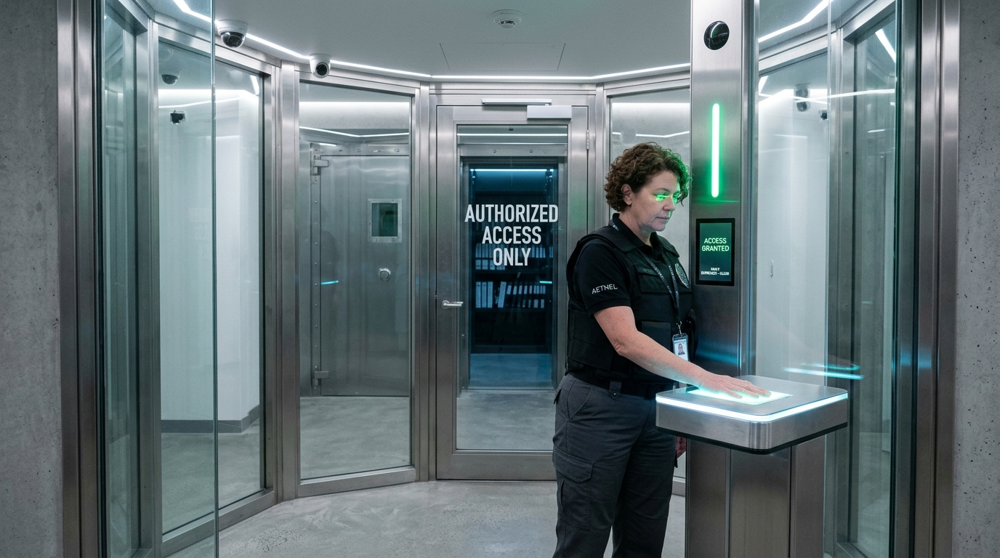
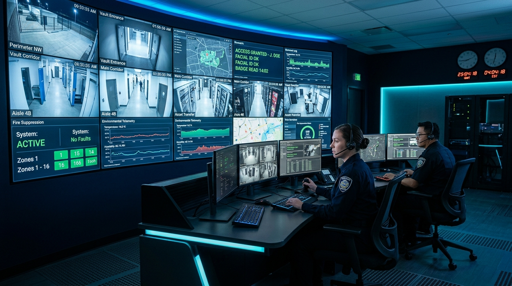
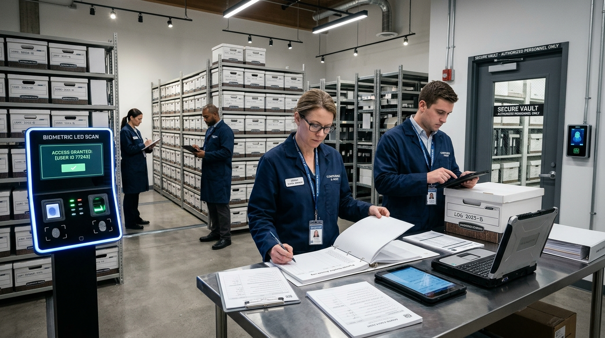

About Us
Protecting critical business records and delivering secure archival solutions since 2005.
A History of Innovation
Key milestones in our journey to becoming a leading records management provider.
Company Founded
ArchiVault launched with a single 10,000 sq ft facility, serving local businesses with basic records storage.
SOC 2 Certification
Achieved SOC 2 Type II certification, enabling us to serve enterprise clients with stringent security requirements.
Digital Scanning Bureau
Opened our first dedicated scanning facility with high-speed production scanners and AI-powered OCR technology.
National Expansion
Expanded to 10 facilities across the country, becoming a truly national records management provider.
Cloud Portal Launch
Launched our cloud-based client portal, enabling real-time inventory tracking and instant retrieval requests.
5 Million Boxes Milestone
Surpassed 5 million boxes in storage across 15 facilities, serving 2,400+ enterprise clients nationwide.
What Drives Us Every Day
Our values are the foundation of everything we do — from how we handle your documents to how we serve your team.
Security First
Every decision we make prioritizes the safety and confidentiality of your records. No compromises, ever.
Client Partnership
We don't just store your records — we become a trusted extension of your records management team.
Innovation
Continuously investing in new technology and processes to deliver faster, smarter records management.
Chain-of-Custody Governance Architecture
Our four-pillar regulatory compliance and security framework guarantees forensic accountability for every document carton, electronic ledger, and digitized file.

Biometric Access Control
Dual-custody verification requiring biometrics and cryptographic smart badges to cross airlock barriers.
RFID Asset Telemetry
Continuous UHF RFID beacon tracking across warehouse shelving providing automated real-time inventory verification.

Forensic Audit Ledger
Immutable cryptographic event stamping for every retrieval, transport handoff, scan, and shredding lifecycle.

Regulatory Accreditations
Pre-configured retention schedules conforming strictly to HIPAA, SOC 2 Type II, ISO 27001, and GLBA mandates.